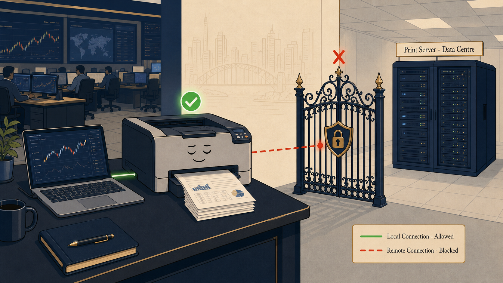
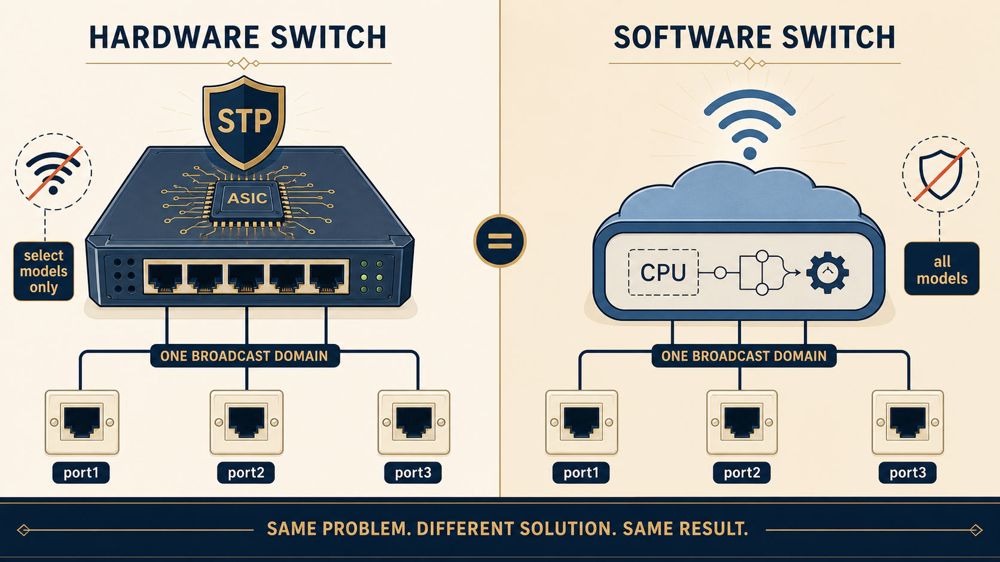
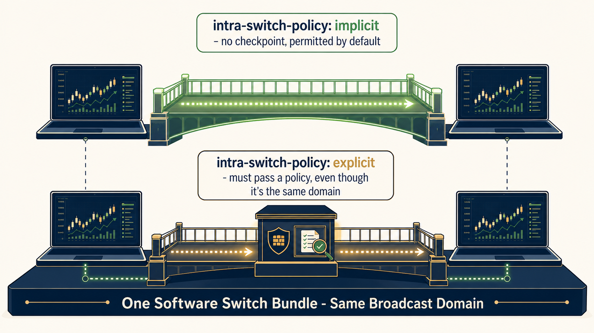

THE SPLIT
Same Ticket, Two Completely Different Journeys
Trace both packets below. Notice which one ever touches FortiGate at all — and which one should, but doesn't yet.
The lesson in one line: Path A working and Path B failing are not evidence of one bug — they're two completely independent mechanisms, and only one of them was ever broken.
MEMORY ANCHOR — SCENE 1
The Sentient Printer

Local traffic strolls right through. Remote traffic hits an invisible fence.
images/s1-sentient-printer.png
A clean, modern editorial-style illustration in a financial-tech aesthetic (navy, cream, muted gold accents matching a Playfair/Cormorant serif branding). A single office laser printer sits on a trading floor desk, calmly and confidently printing a stack of papers with a small green checkmark glowing above it, connected by a short, solid, glowing green line to a nearby laptop on the same desk. In stark contrast, a few feet away, an ornate wrought-iron gate (like an "invisible fence") stands between the printer and a distant server rack labeled "Print Server — Data Centre," with a red dashed line hitting the gate and stopping, a small red X floating above the gate. The overall mood is calm and slightly witty, not alarming — this is a diagram-as-illustration, editorial infographic style, flat vector illustration, no photorealism, plenty of negative space, muted professional color palette.
MEMORY ANCHOR — SCENE 2
Hardware Switch vs Software Switch, Personified

STP lives in the armor. SSID lives in the software.
images/s2-hw-sw-switch.png
A symmetrical split-panel flat vector illustration, financial-tech editorial style (navy #0a1838, cream #faf5e9, muted gold/blue accents). LEFT PANEL labeled "HARDWARE SWITCH": a sturdy, angular metallic box with visible ASIC chip iconography, wearing a small shield icon labeled "STP" over it, with a crossed-out wifi symbol beside it and a small tag reading "select models only." RIGHT PANEL labeled "SOFTWARE SWITCH": a softer, rounded, cloud-like box representing CPU-processed logic, with a glowing wifi/SSID icon radiating from it, a crossed-out shield icon (no STP), and a small tag reading "all models." Both panels connect to the same three labeled physical ports at the bottom ("port1, port2, port3") via clean lines, illustrating they solve the same problem — merging ports into one broadcast domain — differently. Flat design, infographic style, no photorealism, generous negative space, muted professional palette.
MEMORY ANCHOR — SCENE 3
Implicit vs Explicit — The Trust Fence

Same broadcast domain, two very different trust postures.
images/s3-implicit-explicit.png
A flat vector editorial illustration, financial-tech aesthetic (navy, cream, muted gold and green accents). Two identical laptop icons sit on the same shared platform labeled "One Software Switch Bundle — Same Broadcast Domain." Between them, TWO alternate bridges are shown stacked vertically for comparison: the TOP bridge is wide open with no gate, glowing soft green, labeled "intra-switch-policy: implicit — no checkpoint, permitted by default"; the BOTTOM bridge has a small firewall-icon checkpoint booth in the middle labeled "intra-switch-policy: explicit — must pass a policy, even though it's the same domain," with a tiny document/policy icon being checked at the booth. Flat design, infographic style, clean geometric shapes, no photorealism, muted professional palette, plenty of whitespace.
RETRIEVAL HOOK
Carry This Forward
Next time a ticket sounds contradictory, picture this diagram before touching a single config: two separate paths, two separate questions. Solve them one at a time.